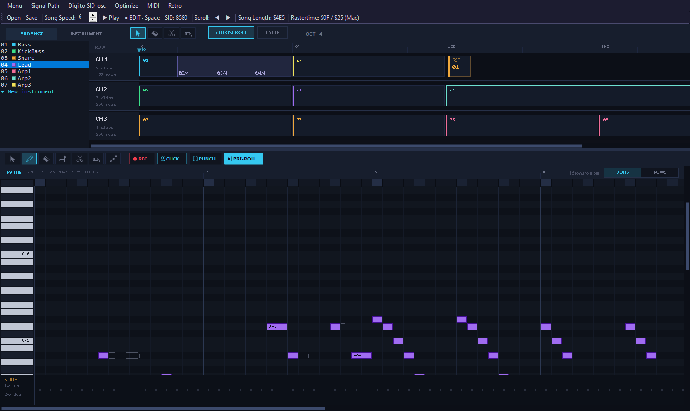
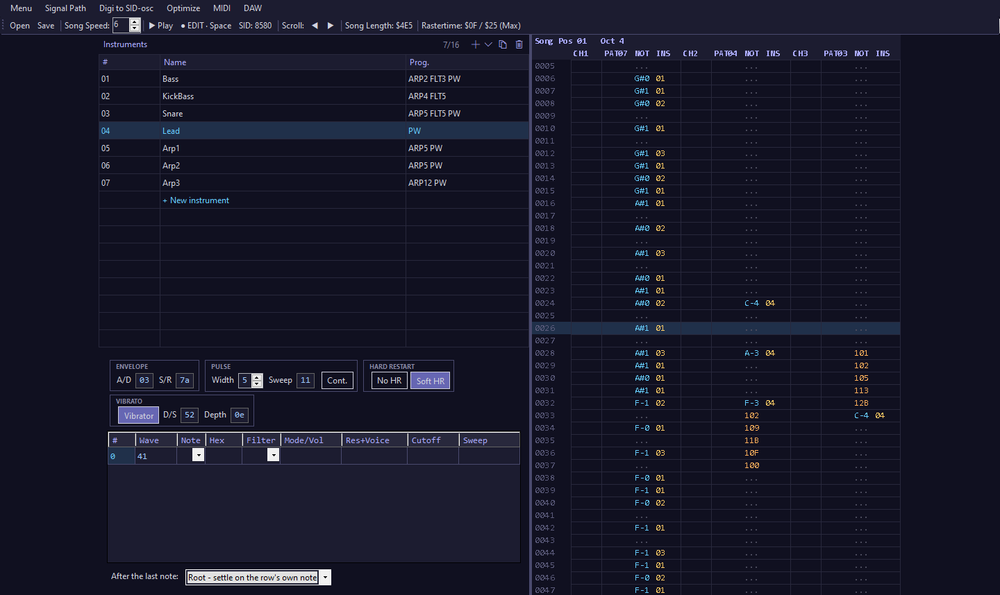
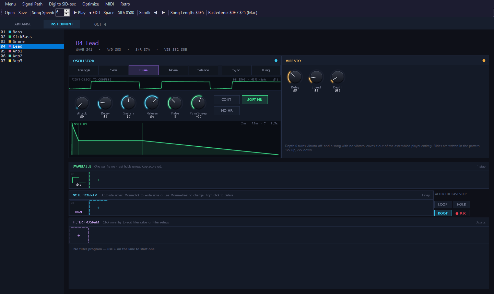
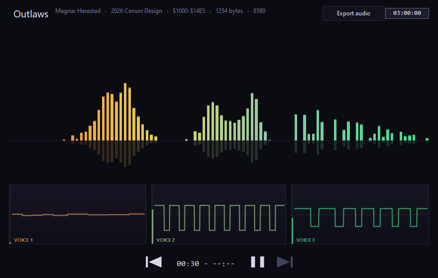

MagSID Editor v1.4
Release date:
A Windows tracker for Commodore 64 music. Write in a classic tracker grid or a DAW-style piano roll,
hear it through reSID, and export a .sid that plays exactly the same on the real machine.

What it does
Two views of the same song, a player that fits in a few hundred bytes, and nothing else to install.
Retro and DAW
A classic tracker grid for typing fast, and an arrangement with a piano roll for seeing the whole song. Both edit the same song at once.
Record from MIDI
Play into the piano roll from a MIDI keyboard, with a one-bar pre-roll, an optional click, and punch-in between the locators. Hold a chord to make an arpeggio.
The real SID sound
Every note is played through reSID, the reference SID emulation, on a 6581 or an 8580. The waveform strip shows what the chip actually outputs.
Tiny player
The C64 player is written in 6502 assembly and only carries the effects a song uses. A finished song, player included, is around 750-1250 bytes.
Exact export
Export to .sid at any load address. The editor builds the file itself, byte for byte what the assembler would make - no assembler or emulator needed.
Built-in SID player
Open any .sid to play it, with a spectrum and a scope per voice, and save it as WAV, MP3 or FLAC.
Import MIDI
Turn a .mid file into a song the C64 way: bass and drums on channel 1, the chords as arpeggios, the lead on top - and each General MIDI sound mapped to an instrument from the demo songs.
Sound bank
25 sounds from the demo songs - instruments, drums, and arpeggios at three speeds. Click a card to hear it, double-click to add it. Save any instrument as a small JSON file to build up your own.


Small by design
Code for an effect is only assembled when a song uses it.
| Player build | Code size |
|---|---|
| No optional effects | 462 bytes |
| With slides | 533 bytes |
| With vibrato | 574 bytes |
| With both | 608 bytes |
| Soft hard restart, when used | +10 bytes |

Songs to try
Download a file and open it in the editor. They live in the source repository, next to the code.
Demo songs Menu → Open
MIDI files Menu → Import MIDI
| Carmen – Prelude | G. Bizet | CC BY-SA 2.5, Alex O'S |
| The Entertainer | S. Joplin | CC BY-SA 4.0, R. D. Tennent, for 4 recorders |
| Melody Chords With Drums | Tozan | CC0, drums, bass, chords and tune |
| Fun is Infinite at AGM | northivanastan | CC0, drums, bass, chords and synth leads |
| Für Elise | L. V. Beethoven | Public domain |
| Greensleeves | Traditional | Public domain |
| In the Hall of the Mountain King | E. Grieg | Public domain |
| Invention No. 8 | J. S. Bach | Public domain |
| The Liberty Bell March | J. P. Sousa | Public domain |
| Minute Waltz | F. F. Chopin | Public domain |
| Moonlight Sonata | L. V. Beethoven | Public domain |
| Première Arabesque | C. Debussy | Public domain |
| Rondo alla Turca | W. A. Mozart | Public domain |
| Toccata and Fugue in D Minor | J. S. Bach | Public domain |
| Wedding March | F. Mendelssohn-Bartholdy | CC BY-SA 4.0, Alexander Brock |
| Eine kleine Nachtmusik | W. A. Mozart | Public domain |
From the Mutopia Project, IMSLP and OpenGameArt. Full credits in midifiles/README.md.
Get started
- Install the .NET 8 Desktop Runtime for x64, if Windows doesn't already have it.
- Download the zip from the latest release, unpack it anywhere and run
MagSID-Editor.exe. There is no installer. - Open a song from the example songs with Menu → Open (F10). F1 plays from the top, F2 from the cursor, F4 stops.
- Menu → About lists every key and control.
License and credits
MagSID is by Magnar Harestad of Censor Design. Thanks to Robert Lundquist (Krikkit) and Fredrik Ternell (Swallow) for technical advice and tools.
Your music is yours. Exported .sid files - the player code and the song data in them - may be used
freely, in any release, commercial or not.
The editor is free software under the GNU General Public License, version 2 or later, and comes with no warranty. Its SID emulation is a C# translation of reSID by Dag Lem; audio and MIDI use NAudio by Mark Heath (MIT). See third-party notices.